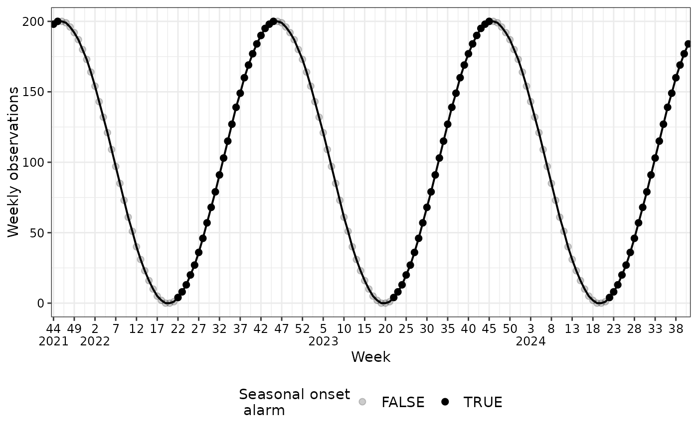
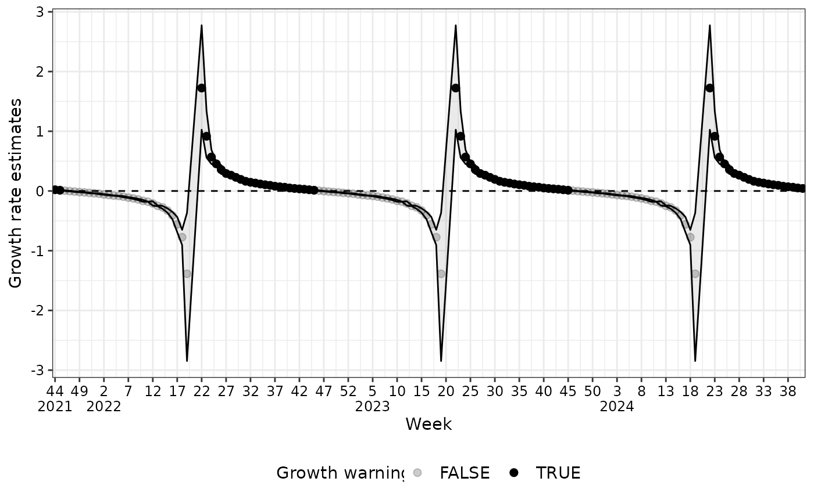
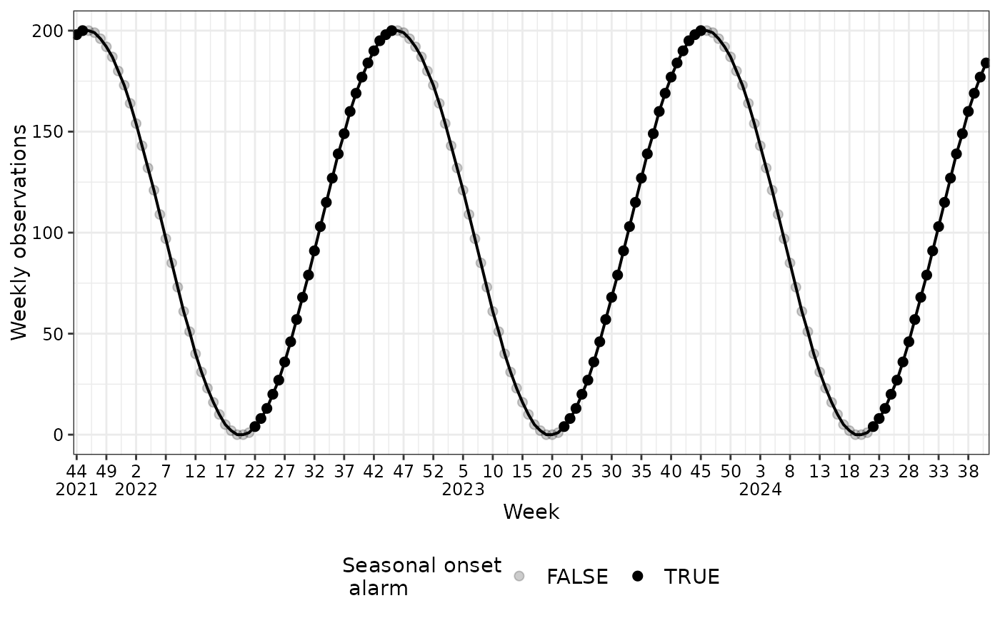
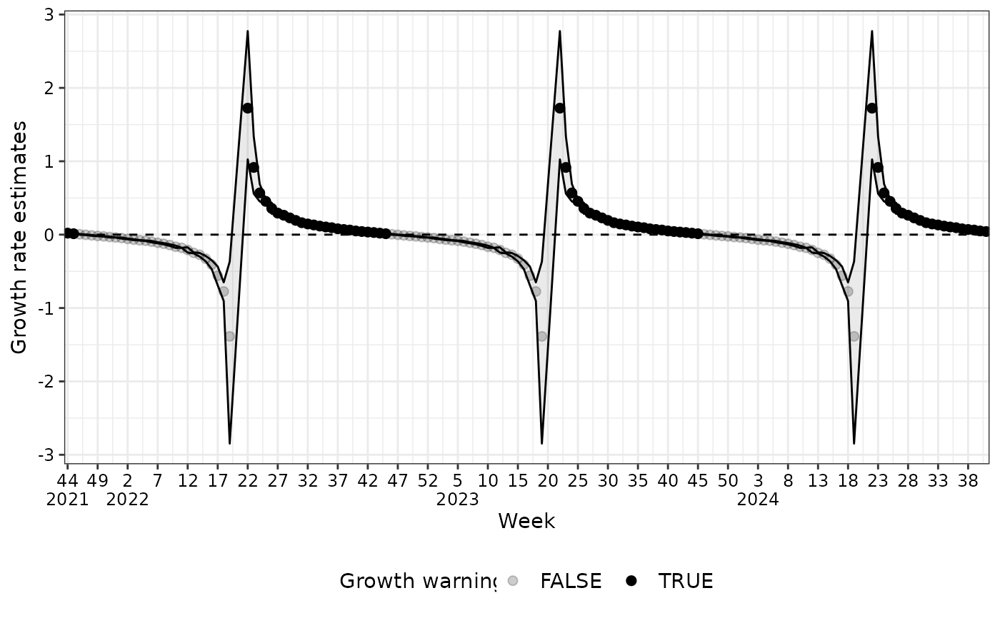

This function generates a complete 'ggplot' object suitable for visualizing time series data in
tsd, tsd_onset, tsd_onset_and_burden or tsd_growth_warning objects.
Usage
# S3 method for class 'tsd'
plot(x, ...)
# S3 method for class 'tsd_onset'
plot(x, ...)
# S3 method for class 'tsd_onset_and_burden'
plot(x, ...)
# S3 method for class 'tsd_growth_warning'
plot(x, ...)Arguments
- x
An
tsd,tsd_onset,tsd_onset_and_burdenortsd_growth_warningobject- ...
Additional arguments passed to
autoplot().
Examples
# set.seed(321)
# Create and plot `tsd` object
tsd_obj <- generate_seasonal_data(
years = 3,
phase = 1,
start_date = as.Date("2021-10-18")
)
plot(tsd_obj)
 disease_threshold <- 150
# Create and plot `tsd_onset` object
tsd_onset_obj <- seasonal_onset(
tsd = tsd_obj,
k = 3,
level = 0.95,
disease_threshold = disease_threshold,
family = "quasipoisson"
)
plot(tsd_onset_obj)


# Create a `tsd_onset_and_burden` object
tsd_onset_burden_obj <- combined_seasonal_output(
tsd = tsd_obj,
disease_threshold = disease_threshold
)
plot(tsd_onset_burden_obj,
y_lower_bound = ifelse(disease_threshold < 10, 1, 5))
# Create a `tsd_growth_warning` object
tsd_onset_seasons <- seasonal_onset(
tsd = tsd_obj,
season_start = 21,
family = "quasipoisson",
only_current_season = FALSE
)
tsd_gr_w <- consecutive_growth_warnings(tsd_onset_seasons)
plot(tsd_gr_w)
disease_threshold <- 150
# Create and plot `tsd_onset` object
tsd_onset_obj <- seasonal_onset(
tsd = tsd_obj,
k = 3,
level = 0.95,
disease_threshold = disease_threshold,
family = "quasipoisson"
)
plot(tsd_onset_obj)


# Create a `tsd_onset_and_burden` object
tsd_onset_burden_obj <- combined_seasonal_output(
tsd = tsd_obj,
disease_threshold = disease_threshold
)
plot(tsd_onset_burden_obj,
y_lower_bound = ifelse(disease_threshold < 10, 1, 5))
# Create a `tsd_growth_warning` object
tsd_onset_seasons <- seasonal_onset(
tsd = tsd_obj,
season_start = 21,
family = "quasipoisson",
only_current_season = FALSE
)
tsd_gr_w <- consecutive_growth_warnings(tsd_onset_seasons)
plot(tsd_gr_w)